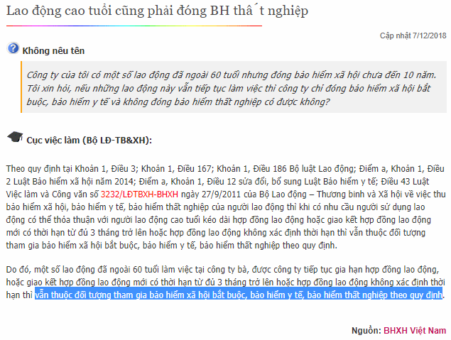

Nghỉ hưu đi làm có phải nộp thuế TNCN? Ký hợp đồng lao động với người nghỉ hưu có phải đóng bảo hiểm xã hội (BHXH)? Nghỉ hưu có phải đóng bảo hiểm y tế không?
Kế toán Diệu Tâm xin tổng hợp các văn bản quy định về vấn đề trên:
----------------------------------------------------------------------------------------------------
Căn cứ Theo Quyết định 959/QĐ-BHXH của BHXH Việt Nam quy định:
"Điều 4. Đối tượng tham gia:
1. Người lao động là công dân Việt Nam thuộc đối tượng tham gia BHXH bắt buộc, bao gồm:
1.1. Người làm việc theo HĐLĐ không xác định thời hạn, HĐLĐ xác định thời hạn, HĐLĐ theo mùa vụ hoặc theo một công việc nhất định có thời hạn từ đủ 03 tháng đến dưới 12 tháng, kể cả HĐLĐ được ký kết giữa đơn vị với người đại diện theo pháp luật của người dưới 15 tuổi theo quy định của pháp luật về lao động;
1.2. Người làm việc theo HĐLĐ có thời hạn từ đủ 01 tháng đến dưới 03 tháng.
Căn cứ theo Luật BHXH - Luật số: 58/2014/QH13 ngày 20/11/2014 quy định:
“Điều 61. Bảo lưu thời gian đóng bảo hiểm xã hội
Người lao động khi nghỉ việc mà chưa đủ điều kiện để hưởng lương hưu theo quy định tại Điều 54 và Điều 55 của Luật này hoặc chưa hưởng bảo hiểm xã hội một lần theo quy định tại Điều 60 của Luật này thì được bảo lưu thời gian đóng bảo hiểm xã hội.”
“Điều 123. Quy định chuyển tiếp
9. Người hưởng lương hưu, trợ cấp bảo hiểm xã hội, trợ cấp hằng tháng mà đang giao kết hợp đồng lao động thì không thuộc đối tượng tham gia bảo hiểm xã hội bắt buộc.”
Như vậy: Người nghỉ hưu đi làm mà đang hưởng lương hưu thì KHÔNG phải đóng BHXH.
-----------------------------------------------------------------------------------------
II. Người nghỉ hưu có phải đóng Bảo hiểm y tế (BHYT)?Căn cứ theo Luật sửa đổi, bổ sung một số điều của Luật BHYT – Luật số 46/2014/QH13 ngày 13/06/2014 quy định:
"6. Sửa đổi, bổ sung Điều 12 như sau:
“Điều 12. Đối tượng tham gia bảo hiểm y tế
2. Nhóm do tổ chức bảo hiểm xã hội đóng, bao gồm:
a) Người hưởng lương hưu, trợ cấp mất sức lao động hằng tháng;”
Theo Nghị định 146/2018/NĐ-CP ngày 17/10/2018 của Chính phủ:
"ĐỐI TƯỢNG THAM GIA BẢO HIỂM Y TẾ
Điều 1. Nhóm do người lao động và người sử dụng lao động đóng
1. Người lao động làm việc theo hợp đồng lao động không xác định thời hạn, hợp đồng lao động có thời hạn từ đủ 3 tháng trở lên; người quản lý doanh nghiệp, đơn vị sự nghiệp ngoài công lập và người quản lý điều hành hợp tác xã hưởng tiền lương; cán bộ, công chức, viên chức.
2. Người hoạt động không chuyên trách ở xã, phường, thị trấn theo quy định của pháp luật.
Điều 2. Nhóm do cơ quan bảo hiểm xã hội đóng
1. Người hưởng lương hưu, trợ cấp mất sức lao động hằng tháng.
2. Người đang hưởng trợ cấp bảo hiểm xã hội hằng tháng do bị tai nạn lao động, bệnh nghề nghiệp; công nhân cao su đang hưởng trợ cấp hằng tháng theo quy định của Chính phủ.
3. Người lao động nghỉ việc hưởng trợ cấp ốm đau do mắc bệnh thuộc Danh mục bệnh cần chữa trị dài ngày do Bộ Y tế ban hành."
Căn cứ theo Luật BHXH - Luật số: 58/2014/QH13 ngày 20/11/2014 quy định:
“Điều 84. Sử dụng quỹ bảo hiểm xã hội
2. Đóng bảo hiểm y tế cho người đang hưởng lương hưu hoặc nghỉ việc hưởng trợ cấp tai nạn lao động, bệnh nghề nghiệp hằng tháng hoặc nghỉ việc hưởng trợ cấp thai sản khi sinh con hoặc nhận nuôi con nuôi hoặc nghỉ việc hưởng trợ cấp ốm đau đối với người lao động bị mắc bệnh thuộc Danh mục bệnh cần chữa trị dài ngày do Bộ Y tế ban hành.”
Như vậy:
- Người đang hưởng lương hưu phải đóng BHYT (Nhưng do Cơ quan BHXH đóng)
-----------------------------------------------------------------------
III. Lao động nghỉ hưu có phải đóng BHTN?
Căn cứ theo Luật Việc làm - Luật số: 38/2013/QH13 ngày 16/11/2013 quy định:
“Điều 43. Đối tượng bắt buộc tham gia bảo hiểm thất nghiệp
2. Người lao động theo quy định tại khoản 1 Điều này đang hưởng lương hưu, giúp việc gia đình thì không phải tham gia bảo hiểm thất nghiệp.”
Như vậy:
- Người đang hưởng lương hưu không phải đóng BHTN.
-------------------------------------------------------------------
IV. Quy định về ký hợp đồng lao động với người cao tuổi:
Căn cứ theo Bộ luật lao động số 45/2019/QH14 ngày 20/11/2019 quy định:
“Điều 149. Sử dụng người lao động cao tuổi
1. Khi sử dụng người lao động cao tuổi, hai bên có thể thỏa thuận giao kết nhiều lần hợp đồng lao động xác định thời hạn.
2. Khi người lao động cao tuổi đang hưởng lương hưu theo quy định của Luật Bảo hiểm xã hội mà làm việc theo hợp đồng lao động mới thì ngoài quyền lợi đang hưởng theo chế độ hưu trí, người lao động cao tuổi được hưởng tiền lương và các quyền lợi khác theo quy định của pháp luật, hợp đồng lao động.”
“Điều 168. Tham gia bảo hiểm xã hội, bảo hiểm y tế, bảo hiểm thất nghiệp
3. Đối với người lao động không thuộc đối tượng tham gia bảo hiểm xã hội bắt buộc, bảo hiểm y tế, bảo hiểm thất nghiệp thì người sử dụng lao động có trách nhiệm chi trả thêm cùng lúc với kỳ trả lương một khoản tiền cho người lao động tương đương với mức người sử dụng lao động đóng bảo hiểm xã hội bắt buộc, bảo hiểm y tế, bảo hiểm thất nghiệp cho người lao động theo quy định của pháp luật về bảo hiểm xã hội, bảo hiểm y tế, bảo hiểm thất nghiệp.”
-------------------------------------------------------------------------------------------
Căn cứ các quy định như trên chúng ta có thể kết luận như sau:
- Nếu ký hợp đồng lao động với người nghỉ hưu (cao tuổi) mà chưa đủ thời gian đóng BHXH (tức là chưa được hưởng lương hưu của BHXH) thì: Phải tham gia BHXH, BHYT, BHTN.
Vì Người lao động chưa từng tham gia BHXH hoặc tham gia nhưng chưa đóng đủ thời gian => KHÔNG thuộc đối tượng HƯỞNG LƯƠNG HƯU, trợ cấp BHXH => Nên vẫn phải tham gia bảo hiểm xã hội bắt buộc.
- Nếu ký hợp đồng với người nghỉ hưu mà đã đủ thời gian đóng BHXH (tức là đang hưởng lương hưu của BHXH) thì: KHÔNG phải tham gia BHXH, BHYT, BHTN.
(Trường hợp này thì DN ngoài việc trả lương theo công việc thì còn phải trả thêm cùng lúc với kỳ trả lương 1 khoản tiền tương đương với mức Doanh nghiệp đóng BHXH, BHYT, BHTN tức là 20% năm 2021.)
Xem thêm: Thủ tục tham gia bảo hiểm xã hội
|

---------------------------------------------------------
Theo Công văn 3232/LĐTBXH-BHXH ngày 27/09/2011 của Bộ Lao động Thương Binh xã hội:Như vậy, Bộ luật Lao động hiện hành chỉ quy định tuổi tối thiểu của người lao động, đối với người lao động cao tuổi (nam trên 60 tuổi, nữ trên 55 tuổi) làm việc theo hợp đồng lao động có thời hạn từ đủ 3 tháng trở lên và hợp đồng lao động không xác định thời hạn thì vẫn thuộc đối tượng đóng bảo hiểm xã hội bắt buộc, bảo hiểm thất nghiệp theo quy định của Luật Bảo hiểm xã hội. Bộ Lao động - Thương binh và Xã hội trả lời để Quý Cơ quan biết và thực hiện./. |
----------------------------------------------------------------------------------
V. Người nghỉ hưu đi làm có phải nộp thuế TNCN:
- Ký hợp đồng lao động với người nghỉ hưu thì vẫn tính thuế TNCN như người lao động bình thường nhé => Tuỳ vào loại hợp đồng lao động mà tính thuế TNCN sẽ khác nhau, cụ thể dưới đây nhé:
1. Nếu ký hợp đồng lao động với người nghỉ hưu từ 3 tháng trở lên: -> Tính thuế TNCN theo biểu lũy tiền từng phần (Như nhân viên bình thường nhé)
Chi tiết xem tại đây nhé:► Cách tính thuế Thu nhập cá nhân
2. Nếu ký hợp đồng dưới 3 tháng, giao khoán:
Theo điều 25 Thông tư 111/2013/TT-BTC quy định:
"Các tổ chức, cá nhân trả tiền công, tiền thù lao, tiền chi khác cho cá nhân cư trú không ký hợp đồng lao động (theo hướng dẫn tại điểm c, d, khoản 2, Điều 2 Thông tư này) hoặc ký hợp đồng lao động dưới ba (03) tháng có tổng mức trả thu nhập từ hai triệu (2.000.000) đồng/lần trở lên thì phải khấu trừ thuế theo mức 10% trên thu nhập trước khi trả cho cá nhân.
----------------------------------------------------------------
Lưu ý: Khoản tiền lương hưu là được miễn thuế TNCN:
Theo điều 3 Thông tư 111/2013/TT-BTC quy định:
"Điều 3. Các khoản thu nhập được miễn thuế
k) Tiền lương hưu do Quỹ bảo hiểm xã hội trả theo quy định của Luật Bảo hiểm xã hội; tiền lương hưu nhận được hàng tháng từ Quỹ hưu trí tự nguyện.
Cá nhân sinh sống, làm việc tại Việt Nam được miễn thuế đối với tiền lương hưu được trả từ nước ngoài."
Theo điều 3 Thông tư 111/2013/TT-BTC quy định:
"Điều 3. Các khoản thu nhập được miễn thuế
k) Tiền lương hưu do Quỹ bảo hiểm xã hội trả theo quy định của Luật Bảo hiểm xã hội; tiền lương hưu nhận được hàng tháng từ Quỹ hưu trí tự nguyện.
Cá nhân sinh sống, làm việc tại Việt Nam được miễn thuế đối với tiền lương hưu được trả từ nước ngoài."
------------------------------------------------------------------------------------------------
Kế toán Diệu Tâm xin chúc các bạn làm tốt công việc kế toán!
-------------------------------------------------------------------------------------------------------
-------------------------------------------------------------------------------------------------------